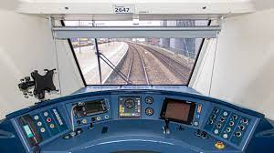

NS
Op deze website staan het materieel van de NS. De Nederlandse Spoorwegen rijden reizigerstreinen waarvan het
overgrote deel bestaat uit elektrische treinstellen. Een klein deel van de treinen wordt gereden met een
combinatie bestaande uit een elektrische locomotief met rijtuigen. De oudste dienstdoende treinen dateren
uit 1980.
De voornamelijkste treinen in Nederland zijn Sprinter, Intercity's en Hogesnelheidstreinen. De belangrijkste
en bekendste activiteit van NS is altijd reizigersvervoer per spoor geweest, en is dat nog.
Mijn ervaringen:

Stoomdepot
Ik ben lid van , waar
ik elke week een blad van krijg.
Hun museum en/of werkplaats is dus het stoom depot.
Spoorwegmuseum
Ik ben in mijn jeugd heel vaak naar het Spoorwegmuseum geweest. Daar hebben ze van die
kleinere treinen waar kinderen t/m 7 in kunnen zitten om een rondje door de tuin te rijden.
VIRM
Ik ben nu ook al een paar keer in de VIRM-cabine geweest, toen die stilstond. Maar ook een paar keer toen hij reed
met passergiers er in. Toen mocht ik meerijden met de machinist.

SLT
Ik ben nu ook al een paar keer in de SLT-cabine geweest. Een paar keer toen hij reed met passergiers er in. Toen
mocht ik meerijden met de machinist of met de conducteur. Vaak was mijn neefje er ook bij, waarbij de conducteur
een keer zn naam om riep.
NVSB
Ik ben ook lid van de .
Terug naar boven